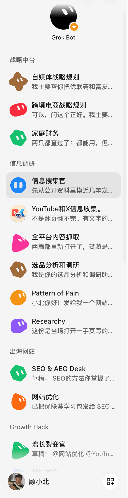
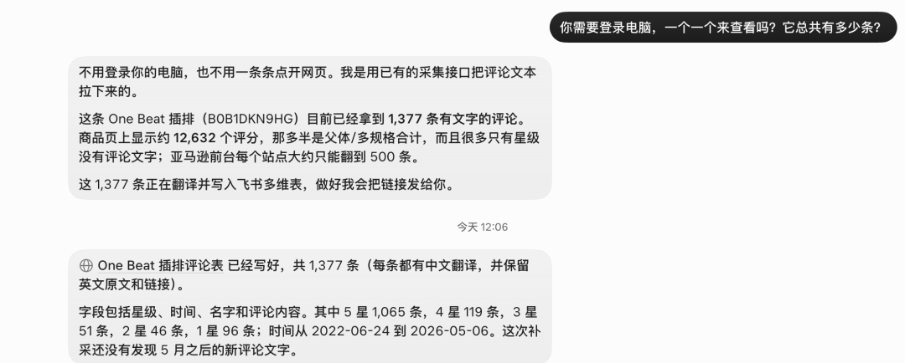
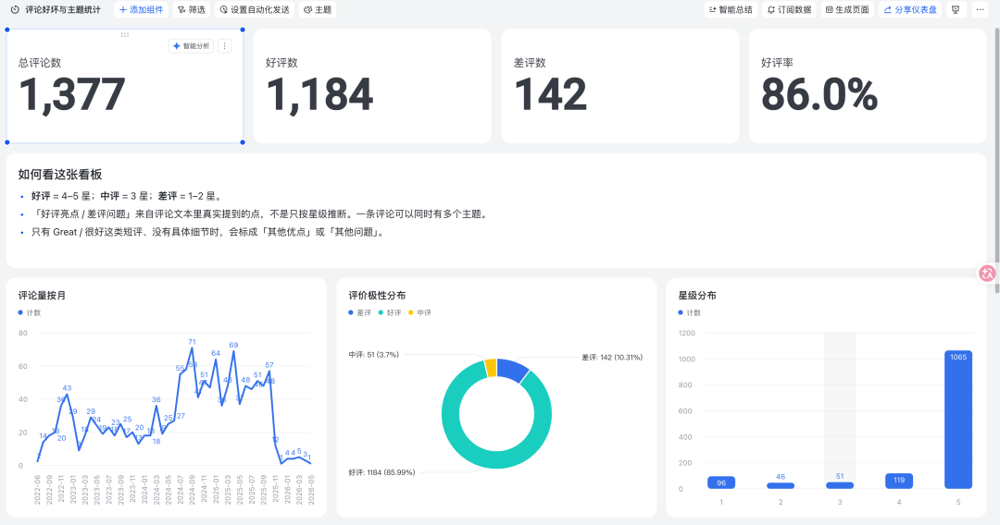

我认为进化太快了
而且现在Personal Agents 非常明确，是实实在在的能工作。
不管你之前制作出来了多少个Agents，可以说都没有Grok Bot那么直观清晰
线上员工
你买了Grok Bot，相当于你养了一支不同角色的员工，每个员工都赋予不同的职能任务，角色和角色之间可以讨论。
你有任务他们直接在电脑上操作，你想让他们学习东西，他们直接打开电脑就可以学习了，整个理论知识体系比3年的运营强太多了
然后再结合你公司的SOP，执行路径喂给他，他做的非常顺手

第一，按你的语气写微博、小红书、公众号初稿，再改到能发。
第二，拆对标账号和爆款，把选题、标题、结构、钩子整理出来。
第三，做调研和资料搜集，把公开内容和案例按题目归好。
第四，排期、提醒、评论区要回的话，也可以交给对应的 Bot。
第五，出图、校对、发布前检查，能拆成一条流水线，不用你每个环节都亲自动手。
电商可以做这些：
第一，盯竞品、类目和公开销售线索，把能用的信息和数字整理成简报。
第二，还能做成定时的，每天自动推送给你
第三，写详情页、广告文案、达人简报、客户回复的初稿。
第四，独立站、亚马逊、TikTok Shop 上要重复做的整理、对比、记录，然后直接记录在飞书上
第五，把选品、调研、内容、客服这些岗位分开，你自己直接交代任务给总管，总管他会把不同的任务交给不同的Bot，你只看结果和做决定。


智力水平
这些Bot早就够用了，是不是。
现在什么对手销量变化，星级变化，价格变化，Grok bot都是可以定时监测的，
真正的核心是战略思考，还有数据搜集，能力现在在这个
普通员工很容易被替代掉了，这个大家自己可以去玩玩就知道了
尤其是做自媒体的，什么写内容的，文案的，人家自己搜集关键信息，每天按时推送给你，还能根据数据表现，帮你来写文案。
一天24小时工作，你随时有问题都可以找他。
都这样了，接下来怎么搞
1、供应链非常强、
2、专利非常强、
3、私域非常厉害、
4、团队能快速复制爆品
5、品牌运营非常强
6、本土化能落地
7、用户运营能力非常强
你自己看看，你上面占了哪条？
现在还不做稀缺的，难而正确的事，只能一直在疲于奔命，而且份额会持续萎缩。
前瞻性的眼光和认知非常重要，这决定了你能走多远。
以上！